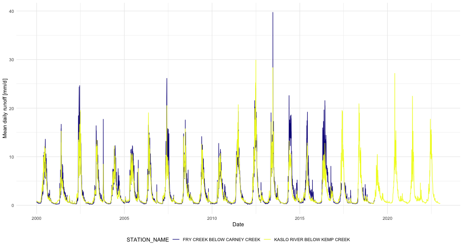

tidyhydat: An Introduction
Sam Albers
2024-01-09
Source:vignettes/tidyhydat_an_introduction.Rmd
tidyhydat_an_introduction.RmdPackage loading
In addition to tidyhydat, this vignette makes use of the dplyr package for data manipulations and ggplot2 for plotting.
tidyhydat package
This vignette will outline a few key options that will hopefully make tidyhydat useful.
HYDAT download
To use many of the functions in the tidyhydat package you will need to download a version of the HYDAT database, Environment and Climate Change Canada’s database of historical hydrometric data then tell R where to find the database. Conveniently tidyhydat does all this for you via:
This downloads the most recent version of HYDAT and then saves it in a location on your computer where tidyhydat’s function will look for it. Do be patient though as this takes a long time! To see where HYDAT was saved you can run hy_dir(). Now that you have HYDAT downloaded and ready to go, you are all set to begin some hydrologic analysis.
Usage
Most functions in tidyhydat follow a common argument structure. We will use the hy_daily_flows() function for the following examples though the same approach applies to most functions in the package (See ls("package:tidyhydat") for a list of exported objects). Much of the functionality of tidyhydat originates with the choice of hydrometric stations that you are interested in. A user will often find themselves creating vectors of station numbers. There are several ways to do this.
The simplest case is if you would like to extract only station. You can supply this directly to the station_number argument:
hy_daily_flows(station_number = "08LA001")## Queried from version of HYDAT released on 2023-11-20
## Observations: 31,351
## Measurement flags: 6,166
## Parameter(s): Flow
## Date range: 1914-01-01 to 2021-12-31
## Station(s) returned: 1
## Stations requested but not returned:
## All stations returned.
## # A tibble: 31,351 × 5
## STATION_NUMBER Date Parameter Value Symbol
## <chr> <date> <chr> <dbl> <chr>
## 1 08LA001 1914-01-01 Flow 144 <NA>
## 2 08LA001 1914-01-02 Flow 144 <NA>
## 3 08LA001 1914-01-03 Flow 144 <NA>
## 4 08LA001 1914-01-04 Flow 140 <NA>
## 5 08LA001 1914-01-05 Flow 140 <NA>
## 6 08LA001 1914-01-06 Flow 136 <NA>
## 7 08LA001 1914-01-07 Flow 136 <NA>
## 8 08LA001 1914-01-08 Flow 140 <NA>
## 9 08LA001 1914-01-09 Flow 140 <NA>
## 10 08LA001 1914-01-10 Flow 140 <NA>
## # ℹ 31,341 more rowsAnother method is to use hy_stations() to generate your vector which is then given the station_number argument. For example, we could take a subset for only those active stations within Prince Edward Island (Province code:PE) and then create vector for hy_daily_flows():
PEI_stns <- hy_stations() %>%
filter(HYD_STATUS == "ACTIVE") %>%
filter(PROV_TERR_STATE_LOC == "PE") %>%
pull_station_number()
PEI_stns## [1] "01CA003" "01CB002" "01CB004" "01CB018" "01CC002"
## [6] "01CC005" "01CC010" "01CC011" "01CD005"
hy_daily_flows(station_number = PEI_stns)## Queried from version of HYDAT released on 2023-11-20
## Observations: 117,530
## Measurement flags: 20,867
## Parameter(s): Flow
## Date range: 1961-08-01 to 2021-12-31
## Station(s) returned: 9
## Stations requested but not returned:
## All stations returned.
## # A tibble: 117,530 × 5
## STATION_NUMBER Date Parameter Value Symbol
## <chr> <date> <chr> <dbl> <chr>
## 1 01CA003 1961-08-01 Flow NA <NA>
## 2 01CB002 1961-08-01 Flow NA <NA>
## 3 01CA003 1961-08-02 Flow NA <NA>
## 4 01CB002 1961-08-02 Flow NA <NA>
## 5 01CA003 1961-08-03 Flow NA <NA>
## 6 01CB002 1961-08-03 Flow NA <NA>
## 7 01CA003 1961-08-04 Flow NA <NA>
## 8 01CB002 1961-08-04 Flow NA <NA>
## 9 01CA003 1961-08-05 Flow NA <NA>
## 10 01CB002 1961-08-05 Flow NA <NA>
## # ℹ 117,520 more rowsWe can also merge our station choice and data extraction into one unified pipe which accomplishes a single goal. For example if for some reason we wanted all the stations in Canada that had the name “Canada” in them we unify that selection and data extraction process into a single pipe:
search_stn_name("canada") %>%
pull_station_number() %>%
hy_daily_flows()## Queried from version of HYDAT released on 2023-11-20
## Observations: 87,669
## Measurement flags: 26,754
## Parameter(s): Flow
## Date range: 1918-08-01 to 2023-05-31
## Station(s) returned: 7
## Stations requested but not returned:
## All stations returned.
## # A tibble: 87,669 × 5
## STATION_NUMBER Date Parameter Value Symbol
## <chr> <date> <chr> <dbl> <chr>
## 1 01AK001 1918-08-01 Flow NA <NA>
## 2 01AK001 1918-08-02 Flow NA <NA>
## 3 01AK001 1918-08-03 Flow NA <NA>
## 4 01AK001 1918-08-04 Flow NA <NA>
## 5 01AK001 1918-08-05 Flow NA <NA>
## 6 01AK001 1918-08-06 Flow NA <NA>
## 7 01AK001 1918-08-07 Flow 1.78 <NA>
## 8 01AK001 1918-08-08 Flow 1.78 <NA>
## 9 01AK001 1918-08-09 Flow 1.5 <NA>
## 10 01AK001 1918-08-10 Flow 1.78 <NA>
## # ℹ 87,659 more rowsWe saw above that if we were only interested in a subset of dates we could use the start_date and end_date arguments. A date must be supplied to both these arguments in the form of YYYY-MM-DD. If you were interested in all daily flow data from station number “08LA001” for 1981, you would specify all days in 1981 :
hy_daily_flows(station_number = "08LA001",
start_date = "1981-01-01",
end_date = "1981-12-31")This generally outlines the usage of the HYDAT functions within tidyhydat.
Real-time functions
In addition to the approved and vetted data in the HYDAT database ECCC also offers unapproved data that is subject to revision. tidyhydat provides three functions to access these data sources. Remember these are unapproved data and should treated as such:
Not every stations is currently part of the real-time network. Therefore realtime_stations() points to a (hopefully) updated ECCC data file of active real-time stations. We can use the realtime_stations() functionality to get a vector of stations by jurisdiction. For example, we can choose all the stations in Prince Edward Island using the following:
realtime_stations(prov_terr_state_loc = "PE")hy_stations() and realtime_stations() perform similar tasks albeit on different data sources. hy_stations() extracts directly from HYDAT. In addition to real-time stations, hy_stations() outputs discontinued and non-real-time stations:
hy_stations(prov_terr_state_loc = "PE")This is contrast to realtime_stations() which downloads all real-time stations. Though this is not always the case, it is best to use realtime_stations() when dealing with real-time data and hy_stations() when interacting with HYDAT. It is also appropriate to filter the output of hy_stations() by the REAL_TIME column.
Meterological Service of Canada datamart - realtime_dd()
To download real-time data using the datamart we can use approximately the same conventions discussed above. Using realtime_dd() we can easily select specific stations by supplying a station of interest:
realtime_dd(station_number = "08LG006")Another option is to provide simply the province as an argument and download all stations from that province:
realtime_dd(prov_terr_state_loc = "PE")Search functions
You can also make use of auxiliary functions in tidyhydat called search_stn_name() and search_stn_number() to look for matches when you know part of a name of a station. For example:
search_stn_name("liard")## # A tibble: 9 × 5
## STATION_NUMBER STATION_NAME PROV_TERR_STATE_LOC LATITUDE
## <chr> <chr> <chr> <dbl>
## 1 10AA001 LIARD RIVER A… YT 60.1
## 2 10AA006 LIARD RIVER B… YT 60.8
## 3 10BE001 LIARD RIVER A… BC 59.4
## 4 10ED001 LIARD RIVER A… NT 60.2
## 5 10ED002 LIARD RIVER N… NT 61.7
## 6 10BE005 LIARD RIVER A… BC 59.7
## 7 10BE006 LIARD RIVER A… BC 59.7
## 8 10ED008 LIARD RIVER A… NT 61.1
## 9 10GC004 MACKENZIE RIV… NT 61.9
## # ℹ 1 more variable: LONGITUDE <dbl>Similarly, search_stn_number() can be useful if you are interested in all stations from the 08MF sub-sub-drainage:
search_stn_number("08MF")## # A tibble: 54 × 5
## STATION_NUMBER STATION_NAME PROV_TERR_STATE_LOC LATITUDE
## <chr> <chr> <chr> <dbl>
## 1 08MF005 FRASER RIVER… BC 49.4
## 2 08MF040 FRASER RIVER… BC 50.6
## 3 08MF062 COQUIHALLA R… BC 49.5
## 4 08MF065 NAHATLATCH R… BC 50.0
## 5 08MF068 COQUIHALLA R… BC 49.4
## 6 08MF075 FRASER RIVER… BC 49.2
## 7 08MF001 ANDERSON RIV… BC 49.8
## 8 08MF002 BOULDER CREE… BC 49.3
## 9 08MF003 COQUIHALLA R… BC 49.4
## 10 08MF004 FRASER RIVER… BC 50.2
## # ℹ 44 more rows
## # ℹ 1 more variable: LONGITUDE <dbl>Using joins
Sometimes it is required to make use of information from two tables from HYDAT. In some cases, we need to combine the information into one table using a common column. Here we will illustrate calculating runoff by combining the hy_stations tables with the hy_daily_flows table by the STATION_NUMBER column:
stns <- c("08NH130", "08NH005")
runoff_data <- hy_daily_flows(station_number = stns, start_date = "2000-01-01") %>%
left_join(
hy_stations(station_number = stns) %>%
select(STATION_NUMBER, STATION_NAME, DRAINAGE_AREA_GROSS),
by = "STATION_NUMBER") %>%
## conversion to mm/d
mutate(runoff = Value / DRAINAGE_AREA_GROSS * 86400 / 1e6 * 1e3)
ggplot(runoff_data) +
geom_line(aes(x = Date, y = runoff, colour = STATION_NAME)) +
labs(y = "Mean daily runoff [mm/d]") +
scale_colour_viridis_d(option = "C") +
theme_minimal() +
theme(legend.position = "bottom") This is an effective way to make use of the variety of tables available in HYDAT.
License
Copyright 2017 Province of British Columbia
Licensed under the Apache License, Version 2.0 (the "License");
you may not use this file except in compliance with the License.
You may obtain a copy of the License at
http://www.apache.org/licenses/LICENSE-2.0
Unless required by applicable law or agreed to in writing, software
distributed under the License is distributed on an "AS IS" BASIS,
WITHOUT WARRANTIES OR CONDITIONS OF ANY KIND, either express or implied.
See the License for the specific language governing permissions and
limitations under the License.